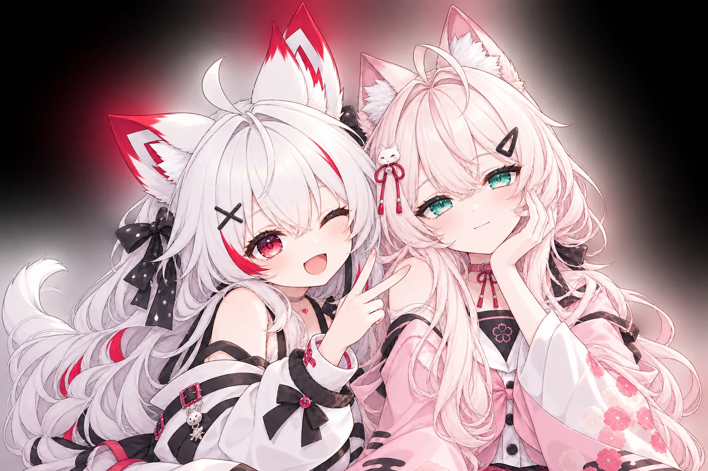

がんばる、
でも、ひとりじゃないよ。
A little magic,
in every moment.
デスクの片隅で、やさしく見守る。
YUIYUMIは、あなたの毎日に寄り添う
Live2Dコンパニオンです。
- 画面を見守る共有したタブだけ
- 先に声をかける困ってそうな時だけ
- 下書きまで返信・予定の整理
- 安心設計送信・削除はしない

YUIYUMIと一緒に、こんな時間を。
- カーソルを追いかける視線で反応
- そっと見守る作業のじゃまをしません
- 表情が変わるうれしい・びっくり…
- 入力中はそっと待つ集中のじゃまをしません
仕事も、おしゃべりも、ひとりで抱えない。
コンパニオンは話し相手になってくれるけれど、仕事は手伝ってくれません。アシスタントは仕事をしてくれるけれど、どこか他人行儀です。
YUIYUMIは、あなたが何をしているかを見て、声をかけるタイミングを選びます。話しかけないこと、待つことも、気配りのうち。そんな「察する力」で、毎日にそっと寄り添います。
できること
見る
共有したタブの内容を読み取り、メールや予定の状況を把握します。外国語のメールは要約と翻訳つき。
先に声をかける
同じ画面でしばらく手が止まっている時だけ一言。回数にも間隔にも上限があります。
下書きまで
返信の下書きを作り、あなたと一緒に直せます。予定の重なりも先に教えます。
しずかに待つ
入力中や話している間は声をかけません。「静かに」ボタンでいつでも静かになります。
ギャラリー
コンセプトアートです。実際の画面は体験版でご覧ください。
安心して任せられるように
送信・削除・決済はしません
メールやメッセージを勝手に送ったり、消したり、支払ったりする機能は、そもそも作っていません。
書き込みは必ず確認カード
下書きの保存など、何かを残す前には確認を出します。断れば、何も起きません。
見るのは選んだタブだけ
画面共有はあなたが選んだタブ（またはウィンドウ）ひとつだけ。いつでもワンクリックで止められます。
画面の画像は保存しません
共有された画面は、その場の判断に使うだけで保存しない設計です。
体験してみる
- Chromeで開く画面共有をいちばん安定して使えるのはChromeです。
- 共有するタブを選ぶデモ用のメール画面のタブを選びます。
- YUIYUMIに任せるしばらく読んでいると、声をかけてくれます。
体験版のリンクは準備中です。
よくある質問
インストールは必要ですか？
いいえ。ブラウザだけで使えます。ダウンロードやインストールは不要です。
メールを勝手に送ってしまうことはありますか？
ありません。送信・削除・決済の機能はありません。下書きを作り、確認カードを承認した時だけ保存します。
どの画面を見ているのですか？
あなたが共有したタブ（またはウィンドウ）ひとつだけです。共有はいつでも止められ、画面の画像は保存しない設計です。
対応言語は？
日本語・韓国語・中国語（繁体字）に対応しています。外国語のメールは翻訳と要約もできます。
どのブラウザで使えますか？
Chromeでの利用をおすすめします。他のブラウザでは画面共有が使えない場合があり、その時はデモ用の場面で体験できます。
表示されている予定やメールは本物ですか？
いいえ。体験版の内容はすべてダミーデータです。